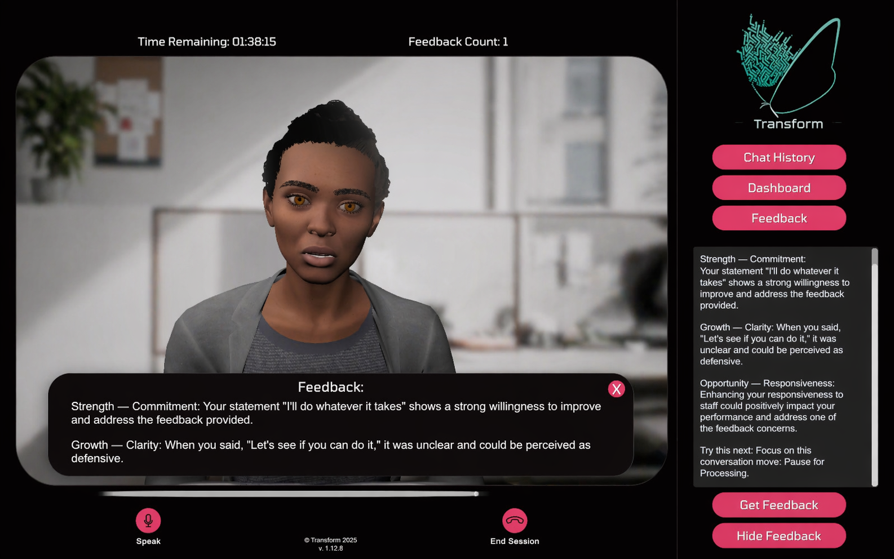

How decades of behavioral research become real-world skill change, from observable behavior to immersive practice to lasting outcomes.
Relational skills are not fixed traits. They are observable, coachable behaviors that change through guided practice. Transform VXR exists to make that practice possible, grounded in 30+ years of organizational and behavioral science.
The moment your voice tightens. The pause before you respond. The instinct to deflect instead of lean in. These are the moments that define relationships, and they only change through practice. Not workshops. Not handbooks. Not knowing the right answer in theory.
Transform places you inside realistic, emotionally charged conversations with characters who react, push back, and respond to every choice you make. The stakes feel real. The consequences don't.

The full pressure of a real conversation, without the real-world cost of getting it wrong.
Try it again. Try it differently. Skills only form through repetition across varied conditions.
Feedback arrives at the moment it matters, specific, actionable, and free of judgment.
The RIQ© framework organizes relational capability into 5 measurable domains, each defined by specific, observable behaviors rather than personality areas. Built from a multi-year review of leadership, healthcare, and organizational psychology research.
Instead of "be more empathetic," the system targets something you can actually practice: "Try pausing to acknowledge what the speaker is feeling before moving on. Even a simple phrase like 'I can see why that would be hard' would help the person feel understood and builds trust." Vague labels don't change behavior. Observable micro-skills do.
Generic feedback fails. Research shows performance improves most when feedback is specific, close in time to the behavior, and paired with a concrete alternative the learner can immediately try.
Feedback arrives after the moment, not as constant interruption, so learners stay in the flow of the conversation, then replay specific moments for targeted practice.
Mirrors evidence-based MI principles: autonomy, specificity, and psychological safety over criticism. Informed by behavior-analytic supervision frameworks.
A common failure in training: people perform well during the session, then revert under real-world pressure. Behavioral science shows that skill transfer is more likely when practice happens across varied contexts, emotional intensities, and relationship types.
Character variability, different personalities, backgrounds, and communication styles across scenarios.
Emotional variability, characters shift in mood, tone, and intensity across scenarios, reflecting the unpredictability of real interactions.
Growth-gated progression, micro-skills must be demonstrated consistently across variations, not just once.
Visible growth tracking, practice time, and clear growth thresholds. Progress is always transparent, users know what's being measured, how scores change, and what progression means.
No hidden scoring or opaque rankings. Gamification is used as a behavioral design tool to support genuine practice, not to maximize time-on-platform at any cost.
When a patient doesn't feel heard, they don't come back.
Relational breakdowns don't just damage relationships, they drive burnout.
Patients who feel genuinely understood are significantly more likely to engage in their own care.
The hardest conversations in healthcare are also the most important ones.
Transform gives patient-facing teams a place to rehearse these conversations before they matter most, with the emotional realism of the real thing, and none of the real-world consequences. Clearer information exchange. Stronger therapeutic alliance. Better patient follow-through.
These aren't soft signals. They are findings replicated across hundreds of studies and decades of research. The connection between how people communicate and how teams and patients perform is one of the most robust in organizational and health psychology.
What we don't claim: Transform VXR alone will fix culture or guarantee specific outcomes. It provides structured deliberate practice in the specific conversations that build, or erode, psychological safety and patient trust.
The system never humiliates, harasses, or escalates in ways that would be unacceptable from a human coach. Guardrails minimize the likelihood of harmful conversational patterns at every level.
Scenarios and AI behavior are regularly reviewed for bias and disparate impact across identities and patient populations. External review is actively invited, not optional.
Specific guidelines and behavioral definitions are provided upfront, and interobserver agreement is established to ensure scoring consistency. AI augments human development, it does not replace the human judgment at the center of it.
Ten minutes. One scenario. Feedback grounded in what you actually said.
Try a Real Clinical Scenario